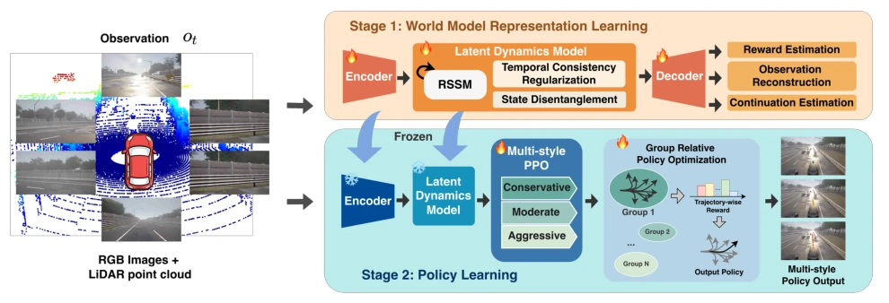
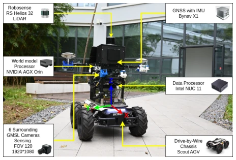
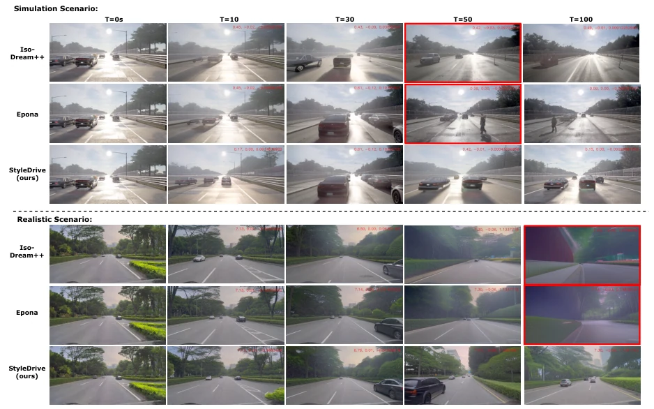
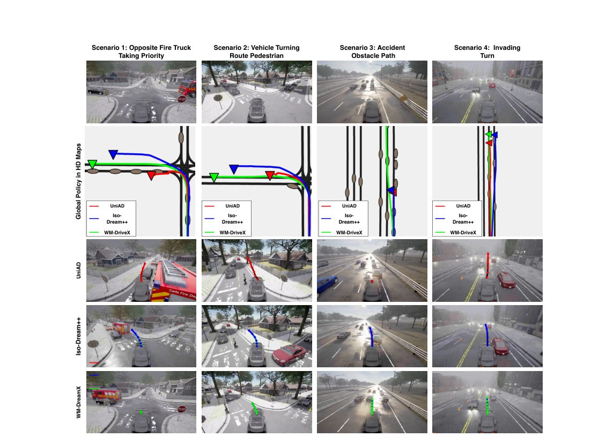
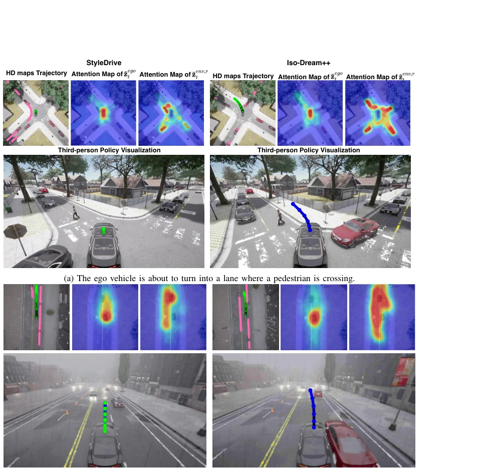
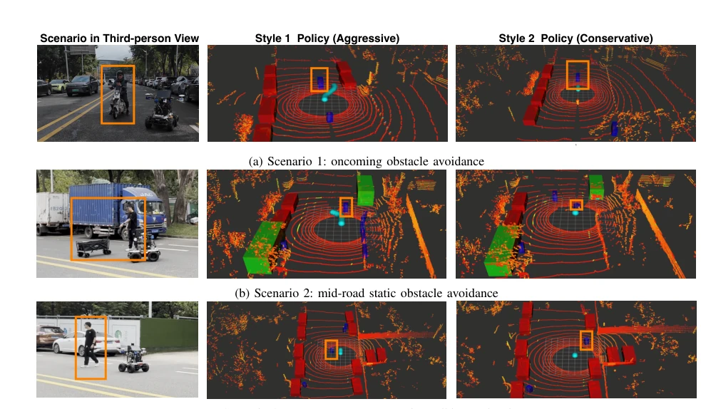
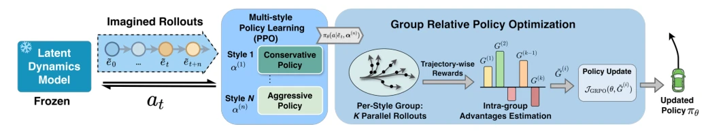

This StyleDrive adds a "three-piece set" to World Model-driven autonomous driving: long-term consistency, interaction decoupling, and multi-style policies. It indeed topped the leaderboard on Bench2Drive, with a DS score of 88.44, significantly outperforming Epona. However, to be honest, GRPO is not new in RL, but its application to multi-style policy optimization is somewhat novel. The biggest drawback is that although claimed to be multi-style, it essentially relies on tuning reward weights to force conservative/aggressive behaviors; if encountering extreme OOD scenarios, whether this "consistency" regularization can withstand long horizon error accumulation remains questionable. However, successfully running on real AGV vehicles is at least better than just boosting scores in pure simulation, adding a brick to WM deployment.
Existing WM-driven E2E driving mainly gets stuck in three pitfalls: long-horizon imagination rollout easily accumulates errors leading to temporal inconsistency [18]; treating surrounding traffic participants equally without distinguishing who is more dangerous to the ego [19]; strategy optimization relies on dense manual rewards, requiring retraining when changing driving styles [20]. This leads to models being either unsafe, too conservative, or lacking flexibility. The authors aim to solve these problems, enabling WM not only to "dream" but to have "sober dreams", and like experienced drivers, possess different temperaments of "aggressive" or "conservative".
Overall divided into two stages: first learn WM representation, then learn policy. WM is based on RSSM, but with three modifications. First, temporal consistency regularization, using gated cross-attention to pull back prior states from the past m steps, preventing "drifting off" during long horizon imagination. Second, state decoupling, splitting the latent state into ego-controllable parts and interaction-environment parts; the environment part is further split into "relevant" and "irrelevant" objects based on spatial + semantic dependencies, letting the model know who to look at. Third, policy optimization uses GRPO, not calculating advantage per step, but using relative advantage over the entire trajectory, enabling simultaneous training of conservative, medium, and aggressive styles without modifying the reward function. The Decoder predicts reward, continuation, and observation reconstruction; Loss includes KL divergence and task loss, ensuring representation quality.

Fig. 1: StyleDrive follows a two-stage training framework: Stage 1) World Model Representation Learning: an RSSM-based world model encodes observations into a latent state and is trained to reconstruct observations, estimate rewards, and continuation signals; Stage 2) Policy Learning: with the learned world model frozen, multiple driving policies (each representing a distinct driving style) are first pre-trained via PPO and subsequently fine-tuned using GRPO to stabilize learning through intra-group relative advantage estimation.

Fig. 4: AGV platform for real-world deployment.

Fig. 7: Qualitative comparison of imagined rollouts from Iso-Dream++, Epona, and StyleDrive in both the CARLA simulator and real-world driving environments. Frames exhibiting temporally inconsistent predictions are highlighted with red bounding boxes.
实验Experiments
在 Bench2Drive (CARLA) 上测，用了 Transfuser++、Epona 等 IL 和 RL 基线。指标看 DS 和 SR。StyleDrive 多模态 DS 88.44，SR 66.82%，都超 SOTA。消融实验证明解耦、GRPO 和时序正则都有用，尤其是时序正则对 FVD 改善巨大，10s 时 FVD 降低 144.2。还上了真车 AGV，做了 sim-to-real 验证，虽然没给详细对比数据，但图里看着能跑，证明了框架的泛化能力。在 44 种驾驶技能测试中，StyleDrive 在 Merging 和 Give Way 上表现突出，优于 ORION 等 IL 模型。
Tested on Bench2Drive (CARLA), using IL and RL baselines such as Transfuser++, Epona. Metrics focus on DS and SR. StyleDrive multi-modal DS 88.44, SR 66.82%, both exceeding SOTA. Ablation experiments prove decoupling, GRPO, and temporal regularization are useful, especially temporal regularization greatly improves FVD, reducing FVD by 144.2 at 10s. Also deployed on real AGV vehicles, conducting sim-to-real verification; although no detailed comparison data is provided, it looks runnable in the figures, proving the framework's generalization capability. In 44 driving skill tests, StyleDrive performs outstandingly in Merging and Give Way, superior to IL models like ORION.

Fig. 5: Qualitative comparison in four driving scenarios. From top to bottom, each row shows the driving scenarios, the BEV HD maps with driving trajectories, and third-person visualizations of the predicted trajectories (in red, blue, and green lines with dots) from UniAD, Iso-Dream++, and StyleDrive, respectively.

Fig. 6: Attention map visualization of StyleDrive and Iso-Dream++ in two scenarios. For each subfigure, the top row shows the BEV HD maps with predicted trajectories (in green) and other agents’ trajectories (in pink), along with attention maps corresponding to the controllable state ˜zego t and the ego-relevant interactive state ˜zenv,r t ; the bottom row displays the driving trajectories from a third-person perspective.

Fig. 8: From top to bottom, we show the E2E driving results of StyleDrive deployed on an AGV in three real-world scenarios. In each row, we illustrate a third-person view of the scenario, the output trajectories (in light blue) under two distinct driving styles (aggressive vs. conservative) onto the LiDAR BEV maps. The orange bounding box indicates obstacles in scenarios.
其他图片Other Figures

Fig. 3: Multi-style policy learning pipeline: A style-conditioned policy is first trained via PPO using imagined rollouts from the frozen world model, with driving styles parameterized by distinct configurations α(n). The policy is then fine-tuned using GRPO, which leverages trajectory-wise relative rewards from parallel real-world rollouts to enable joint optimization of diverse behaviors through intra-group advantage estimation.